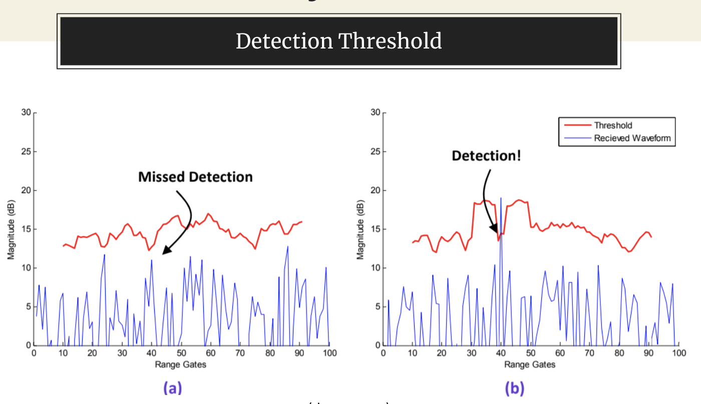
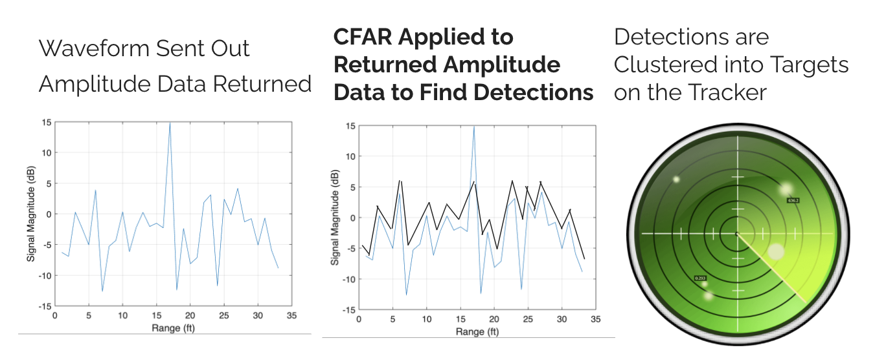
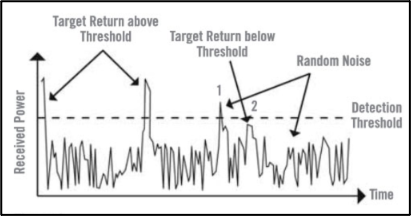
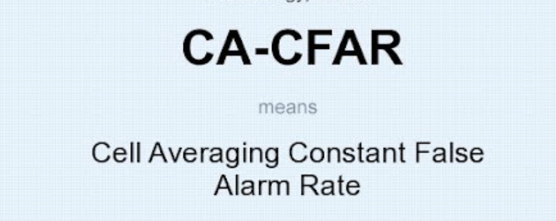

Project Basis - Constant False Alarm Rate
The Constant False Alarm Rate family of algorithms are commonly used in radar detection systems to detect targets in the presence of background noise and clutter while maintaining a fixed false alarm rate using an adaptive detection threshold. False alarm rate is how often a system falsely detects a target, and a detection threshold is a specified amplitude value that marks the boundary between targets and noise. Returning amplitudes of the received signal greater than the detection threshold for a given false alarm rate are usually considered targets, while the amplitudes less than it are considered noise.

Putting CFAR into a broader context
CFAR algorithms play a central role in the general process of radar detection. First, the radar sends out a pulse signal, and noise data is returned. This pulse is sent in every single direction, or a 360 degree rotation. Then, for each sample of noise data returned, a CFAR algorithm is applied to establish a threshold and find detections. Then, the detections over all the different directions are then clustered to show entire targets on the tracker.

Identify Detection Threshold - Noise Mean Estimate
Current research has significantly improved radar detection techniques, but it is important to invest in prototyping and testing the performance of new ideas. One potential area for further investigation regarding current detection systems is with the methods used to establish the noise mean estimate, the average noise amplitude surrounding a potential target which is used to set detection threshold.

Current CFAR Algorithms
Over the years, various CFAR (Constant False Alarm Rate) based algorithms such as GO-CFAR (Greatest Of CFAR), SO-CFAR (Smallest Of CFAR) and CA-CFAR (Cell Averaging CFAR) were developed to adaptively establish the noise mean estimate and set the radar detection threshold in the presence of unwanted signals for a specified false alarm rate. These algorithms are based on logic such as using the mean or median or a subset of the noise points to determine the detection threshold and were designed to address individual problems such as detecting targets in a specific environment. There is significant potential for improvement with the methods used in these algorithms to establish the noise mean estimate.